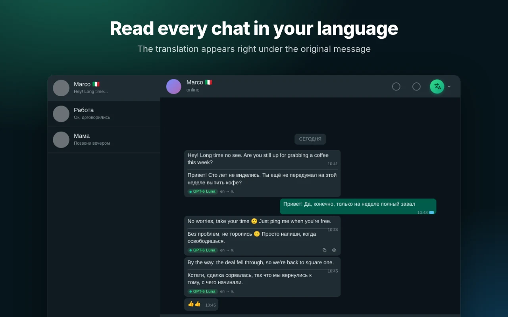
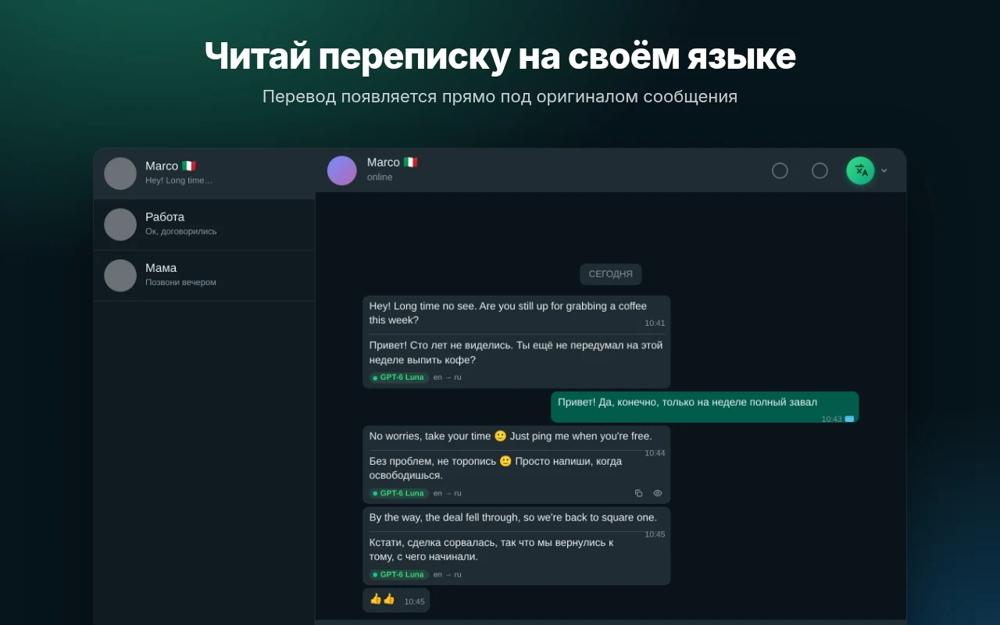
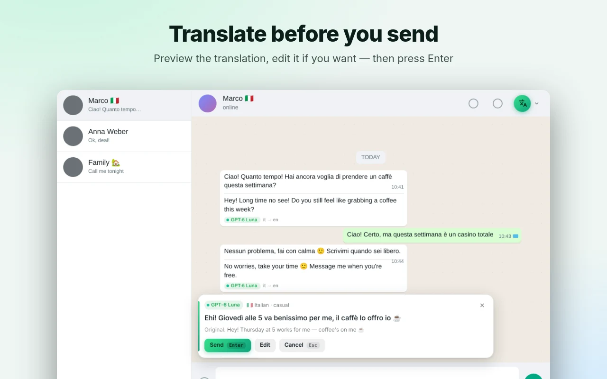
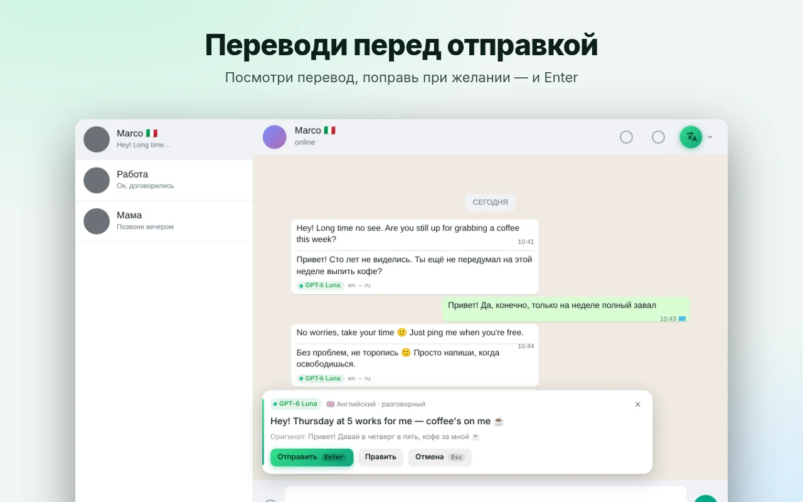
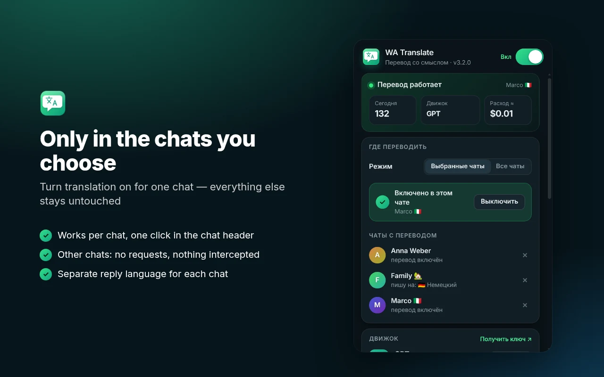
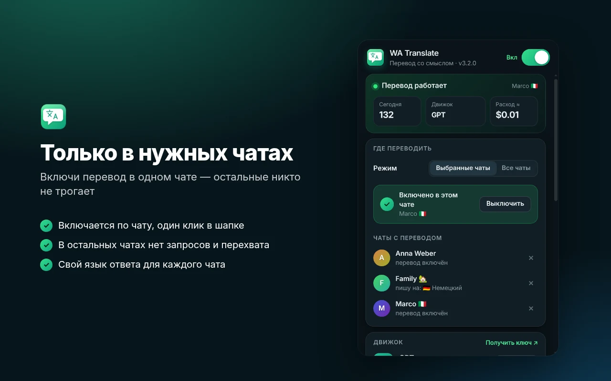
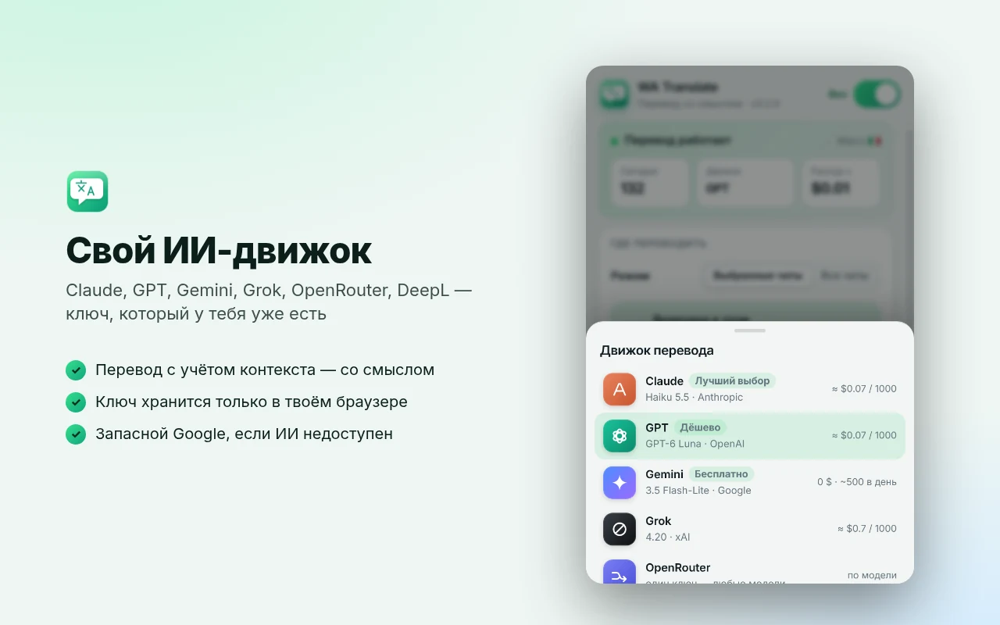
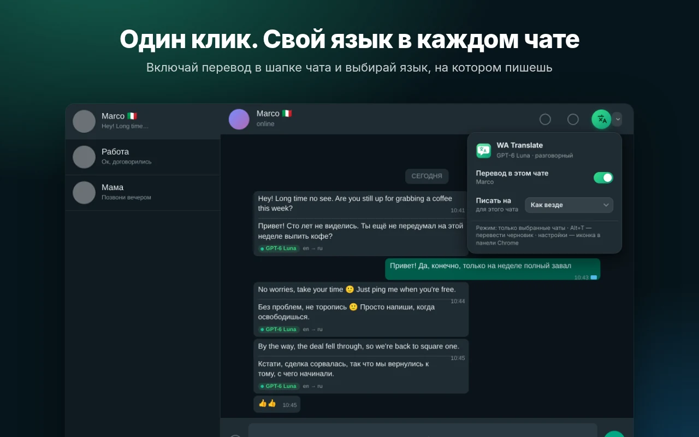

WA Translate – AI translator for WhatsApp Web– ИИ-переводчик для WhatsApp Web
Talk with anyone in any language. Incoming messages are translated under the original, your replies are translated before they are sent — with your own AI, and only in the chats you choose.Общайтесь с кем угодно на любом языке. Входящие переводятся под оригиналом, ваши ответы — перед отправкой. Своим ИИ и только в тех чатах, которые вы выберете.


Everything you need to chat across languagesВсё, чтобы переписываться на разных языках
Designed to stay out of your way: it works only where you want it and shows you exactly what will be sent.Расширение не мешает: работает только там, где вы хотите, и показывает, что именно будет отправлено.
Translation that keeps the meaningПеревод со смыслом
AI engines see the recent conversation, so slang, tone, idioms and names are handled like a human would — not word by word.ИИ видит последние сообщения диалога, поэтому сленг, тон, идиомы и имена переводятся как у человека, а не слово в слово.
Incoming, translated in placeВходящие — сразу под оригиналом
The translation appears under each message with a small badge showing the engine and languages. Original stays visible.Перевод появляется под каждым сообщением с маленьким бейджем движка и языков. Оригинал остаётся на месте.
Replies, checked before sendingОтветы — с проверкой перед отправкой
Write in your language, press Enter, review the translation in a preview card, then send, edit or cancel. Instant-send mode is optional.Пишете на своём языке, жмёте Enter, смотрите перевод в карточке — и отправляете, правите или отменяете. Есть режим мгновенной отправки.
Only in the chats you chooseТолько в нужных чатах
Off by default. Turn it on per chat with one click, each with its own reply language. In other chats it does nothing at all.По умолчанию выключено. Включайте по чатам одним кликом, у каждого свой язык ответа. В остальных чатах расширение не делает ничего.
Bring your own keyВаш собственный ключ
Use the AI account you already have. Pay the provider directly — usually a few cents per thousand messages. A free engine is included.Используйте ИИ, который у вас уже есть, и платите провайдеру напрямую — обычно несколько центов за тысячу сообщений. Есть и бесплатный движок.
25 languages, auto-detect25 языков, автоопределение
Source language is detected automatically. Reply in a casual or business style. A free Google fallback keeps chats working if the AI is down.Язык оригинала определяется сам. Ответы — в разговорном или деловом стиле. Бесплатный Google-запас выручит, если ИИ недоступен.
Set up in three minutesНастройка за три минуты
Pick an engineВыберите движок
Choose Claude, GPT, Gemini, Grok, OpenRouter, DeepL — or free Google — and paste your key.Выберите Claude, GPT, Gemini, Grok, OpenRouter, DeepL или бесплатный Google и вставьте свой ключ.
Enable the chatВключите чат
Open WhatsApp Web, click the translate button in the chat header and set your languages.Откройте WhatsApp Web, нажмите кнопку перевода в шапке чата и задайте языки.
Just chatПросто общайтесь
Read translations under messages. Write in your language, press Enter, check the preview, send.Читайте переводы под сообщениями. Пишите на своём языке, жмите Enter, проверяйте превью, отправляйте.
A closer lookПосмотрите поближе








Use the AI you already trustИспользуйте ИИ, которому доверяете
Switch engines any time. If your AI is unavailable, an optional free fallback keeps the chat working.Меняйте движок в любой момент. Если ИИ недоступен, необязательный бесплатный запасной вариант не даст чату остановиться.
Your messages, your keys, your browserВаши сообщения, ваши ключи, ваш браузер
There is no WA Translate server. Nothing is collected about you.Сервера WA Translate не существует. О вас ничего не собирается.
- No account, no developer server, no analytics, no ads.Без аккаунта, без сервера разработчика, без аналитики и рекламы.
- Your API keys and settings live only in your browser.Ваши API-ключи и настройки живут только в вашем браузере.
- Text is sent only to the engine you picked, with your key, for chats you enabled.Текст уходит только выбранному вами движку, с вашим ключом, и только из включённых чатов.
- Access to a provider’s server is requested only when you select it.Доступ к серверу провайдера запрашивается только когда вы его выбираете.
Questions & answersВопросы и ответы
Is it free?Это бесплатно?
The extension is free. If you use an AI engine you pay your own provider for API usage (usually a few cents per thousand messages). The Google Translate engine needs no key, but its translation is more literal.Расширение бесплатное. Если используете ИИ-движок, вы платите своему провайдеру за API (обычно несколько центов за тысячу сообщений). Движок Google Translate работает без ключа, но переводит буквальнее.
Do I need an API key?Нужен ли API-ключ?
For Claude, GPT, Gemini, Grok, OpenRouter or DeepL — yes, create a key in that provider’s console and paste it in the extension. The key is stored only in your browser. Without a key you can use the free Google engine.Для Claude, GPT, Gemini, Grok, OpenRouter и DeepL — да: создайте ключ в консоли провайдера и вставьте его в расширение. Ключ хранится только в вашем браузере. Без ключа можно пользоваться бесплатным движком Google.
Where do my messages go?Куда уходят мои сообщения?
There is no developer server. Message text goes straight from your browser to the translation provider you selected, only for chats where you enabled translation. See the privacy policy for the full list.Своего сервера у разработчика нет. Текст сообщений уходит напрямую из браузера выбранному вами провайдеру перевода и только из чатов, где вы включили перевод. Полный список — в политике конфиденциальности.
Does it work with the WhatsApp desktop or phone app?Работает ли с приложением WhatsApp на компьютере или телефоне?
No — only with WhatsApp Web (web.whatsapp.com) in a Chromium-based browser such as Chrome, Edge, Brave or Opera.Нет — только с WhatsApp Web (web.whatsapp.com) в браузерах на Chromium: Chrome, Edge, Brave, Opera.
Which language is the interface in?На каком языке интерфейс?
The extension’s own interface is currently in Russian. Translation itself works between 25 languages.Интерфейс самого расширения сейчас на русском. Сам перевод работает между 25 языками.
Can WhatsApp change something and break it?Может ли WhatsApp что-то поменять, и всё сломается?
It can happen: WhatsApp Web changes from time to time. The extension has a Diagnostics mode that produces a report without any message text, which you can send to the developer via GitHub issues.Такое возможно: WhatsApp Web время от времени меняется. В расширении есть режим «Диагностика» — отчёт без текста сообщений, который можно отправить разработчику через GitHub issues.
Is it official?Это официальное расширение?
No. WA Translate is an independent project and is not affiliated with WhatsApp or Meta. It only reads the page you have open and sends a message only after you confirm it.Нет. WA Translate — независимый проект, не связанный с WhatsApp и Meta. Оно лишь читает открытую вами страницу и отправляет сообщение только после вашего подтверждения.
How do I install it before it is in the Chrome Web Store?Как установить, пока его нет в Chrome Web Store?
Download the ZIP, unzip it, open chrome://extensions, turn on Developer mode, click “Load unpacked” and choose the unzipped folder.Скачайте ZIP, распакуйте, откройте chrome://extensions, включите «Режим разработчика», нажмите «Загрузить распакованное» и выберите распакованную папку.
Start chatting in any languageОбщайтесь на любом языке
Free, private and under your control.Бесплатно, приватно и под вашим контролем.